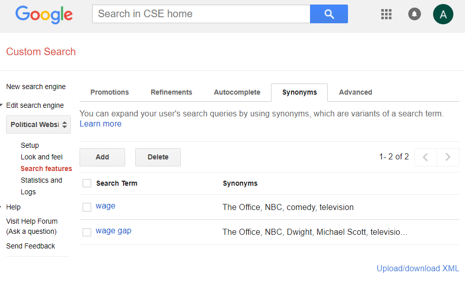
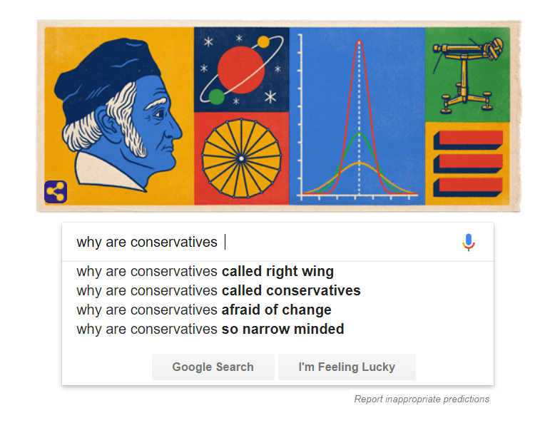
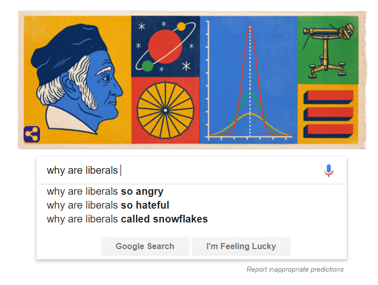

Google Search as a Weapon of Math Destruction
O’Neil classifies a Big-Data algorithm as a WMD if it meets the criteria of being Widespread, Mysterious, and Destructive. A system is widespread if it makes decisions that impact many individuals and mysterious if the formulas are not available to the people that are being scored by them. An algorithm can be destructive in two ways: by creating unfair impacts on people’s lives or by making the problem that the algorithm is trying to solve worse by creating a feedback loop.
Google easily falls into the categories of widespread and mysterious. It is widespread because it makes decisions that impact billions of users. Google is mysterious because it does not publish the source code for its search algorithms, as they are proprietary and most likely more complicated than could be understood by a casual user and too large to download on a computer, or even several computers.
O’Neil rejects the idea that Google is a WMD because it does not meet the third condition, destructive. Google is not a destructive algorithm because it does not explicitly skew search results to favor a particular political ideology and does not cause active harm to individuals, at least not visibly.
While Google may not fit the complete definition of a WMD, it is worthwhile to look at the areas that have a potential to cause passive harm. The accumulation of small biases over a data set of 1.7 billion users’ queries could yield a significant impact on information that is valued and propagated among society as a whole (Statista). This paper will attempt to provide transparency to a few perceived passive biases inherent in Google searches as well as provide a discussion as to their potential to undermine democracy.
Disclaimer
This paper is implemented as an interactive web-page to allow the reader to test the validity of the presented claims and provide additional transparency regarding the ease at which programmers can manipulate the results of search engines without a user’s knowledge. The search engines used in this example were created using Google's Customizable Search Engine Application Programming Interface. The search bars source results from ten popular political sites (listed in the references). Thus, while Google's search algorithm is used in the search boxes presented on this page, the results will not be identical to searches on Google's main page and are merely meant to illustrate the ways that search engine designers can manipulate user queries.
Lost in Translation
A primary component of being a well-informed, critical citizen is access to reliable information about current political topics and viewpoints. According to a study done by the Pew Research Center in 2012, 73% of search engine users believe that information found via search engines is “accurate and trustworthy” and 66% believe that search engines are “fair and unbiased sources of information” (Purcell).
However, the general assumption that search engines produce unbiased results is challenged by the nature of search terms. Because computers speak binary, and not English, humans are responsible for both converting phrases to meanings understandable to a computer and choosing the language of the query to enter into the search bar. Consider the phrase “Will Will will the will to Will?”. While a human would recognize that the phrase is asking if one William chose another William as his inheritor, it is difficult to teach a computer such intuition. The phrase “Emily rode the horse wearing red boots” is also difficult for a computer to interpret because it is syntactically ambiguous as to whether Emily or the horse are wearing the red boots. While the search impacts of such queries are likely limited, natural ambiguities, slang, dialectical differences, and not to mention spelling mistakes require a lot of complex, embedded assumptions that make unbiased results impossible.
This bias can impact developmentalism in a democracy because access to fair and diverse information is required to be a conscientious citizen. If voters turn to Google to search for political information, such as the views and voting history of a political candidate, or the actions of a current candidate, the way that the user words his or her search terms may impact the results that he or she sees. For example, a person may assume that “Is Donald Trump doing a good job?” and “Is Donald Trump doing a bad job?” have the same meaning, however a search algorithm will look at “good” and “bad” and skew the results towards articles it deems more relevant (i.e. that contain the keyword “good” or “bad”). Since the user whose search terms included “good” never sees the results of the same query using “bad”, the “good” user won’t know that their results have been skewed and will assume that the articles have been selected to best represent the meaning of the query, rather than its syntax.
The search bars below can be used to experiment with different wordings of similar queries. (Additional queries can be searched by clicking on the margins outside of the results page).
One way that Google tries to solve the ambiguity of phrases is by creating libraries of synonyms to give multiple possible meanings to a single word. For example, in the search bars above, several synonyms have been added to the search term "wage gap". If the term "wage gap" is typed into the search bar above, the results are mixed with results from searching information related to the popular television show The Office.

Synonyms for "wage gap" and "wage" added to the search engine to skew the results
While this may be a trivial example, it demonstrates the importance that small linguistic interpretations have on filtering results.
Not only are the results skewed by the wording of a query, but the convenience of access to large amounts of information without an explicit value of quality can lead us to seek out articles that confirm our believes and disregard counterpoints as internet noise. According to a study that examined confirmation biases in search engines, “the search strategies we employ on the Web that are, more often than not, geared toward seeking information that confirms our existing beliefs” (Varol). The combination of users repeatedly searching liberal or conservative search-terms and Google’s practice of “tailoring suggestions… to your known interests and location” can cause users to build the walls of their own information silos (Biersdorfer).
Adding to the bricks and mortar is the autocompletion of search terms. Autocomplete and the use of our past search histories to determine the relevance of a webpage poses an additional opportunity to confirm existing beliefs in lieu of searching for new information. Re-feeding a users’ past queries back to them makes it more convenient to re-use wordings rather than using new language to re-define a question.


The assumption that search engines provide credible and unbiased results in conjunction with individual users’ tendencies, conscious or unconscious, to search for confirming information poses several challenges to a healthy democratic system. Participation in debate is a fundamental component of politics because it causes people to consider diverse viewpoints and test their existing views to see if a compromise can be found. If a user unconsciously searches for a biased search query, then they will likely only be presented with results that match the language of that query. Without easily visible access to countering views, the system can push users towards increasingly polarized views that limit the overlap between differing ideologies and steer them away from finding common ground.
Search Engine Optimization
While your internet connection might not be free, Google is. Google does not need to charge users money to use their search engine because they make their money by selling top-ranking result spots to companies to increase their visibility. In a market where attention is currency, page rankings are a large determinant of the visibility of a company’s website.
These ranking algorithms “analyze hundreds of different factors to try to surface the best information the web can offer, from the freshness of the content, to the number of times your search terms appear and whether the page has a good user experience”. It also looks for sites that are popular among users with similar queries, as well as if the site is linked to by other popular sites ("How").
The ranking order is the most important component of a site’s visibility. Statistically, 33% of users click on the first result. 66% click on either the first, second or third links. Only 10% of users make it to the second page of results, while less than 1% check page three (Sharp). According to O'Neil, "for businesses...success hinges on showing up on the first page of search results" (O'Neil, 96)
On the one hand, search engine ranking algorithms are a great benefit to democracies. Search engines efficiently organize billions of pages on the web and make it convenient for ideas found, copied-and pasted, and passed on. Small-time bloggers can share the stage equally with large media corporations to reach larger audiences than they could otherwise. It also saves users a significant amount of time that they would waste crawling through unindexed page tables with no guarantee of returning any better results.
From a classical-liberal perspective, page ranking is an advantage. If a website is successful, then it will move up the rankings via its popularity (page views and number of sites that link to that website).The added revenue from the exposure to potential consumers that high page rankings have would allow the webiste owners to hire a Search Engine Optimization expert to help tinker the website to be as high on the rankings as possible. Malicious, poorly made, or unpopular sites will be pushed down the rankings. However, this ranking can also mean that the "kinds of independent voices and diverse viewpoints that are essential for democracy are incapable of being heard through the filter of search engines" if they are not popular enough to earn a high ranking (Stanford).
On the surface, use of popularity to determine the relevance of a page seems logical. When we review websites, we make decisions as to whether the page is relevant to our query or not. If we click on a site and then search another site, then the first one was probably not the best result. However, the best information for a query is not always the most popular.
In her book, Algorithms of Oppression, Safiya Umoja Noble described a time that she tried to use Google to search for activities for her young nieces. When she searched “black girls”, she was shocked to find that a majority of the results were pornographic (Noble). In this case, the page ranking algorithm had learned to prioritize sexual results from other users that had searched for them. While many people use google and make measurable judgements on the pages that they are presented with, the use of human interest as a metric for webpage relevance and priority can reinforce biased data especially when users do not tend to move beyond the first page of search results. The worth of a page can be inflated by being of a scandalous nature or limited by a lack of internet traffic due to its page rank.
Interestingly, the popularity of a site can be analyzed using Google's Google Trends service. Below are the average popularities for the search terms "pumpkin", "Olympics", and "Twitter" for U.S. searchers from January 1, 2004 to the present.
(If you have trouble viewing the image above, please click the "Google Trends" logo at the bottom of the frame to see the full data).
In the graph above, the search term "Pumpkin" is somewhat popular every October, "Olympics" has its peak popularities during the summer and winter games, and "Twitter", while unpopular in the early 2000s, rose significantly during the 2010s and has since been waning.
While the search frequencies of "pumpkin", "Olympics", and "Twitter" are somewhat trivial, it is interesting to look at the popularity of political search terms.
Popular search terms are important because the page ranking algorithm causes Google to systematically direct millions of users towards specific sites and away from others, partially based on a site's popularity. When a conscientious citizen turns to Google to look for political information, he or she may expect the results to be credible and reflect a wide range of views, especially when presented with the phrase "About 14,800,000 results (0.35 seconds)". However, the use of popularity to select the top 10 results from 14 million can skew otherwise credible results with salacious articles.
The idea of popularity generating popularity contradicts the "principles of deliberative democracy - and especially if we believe that the Web is an open, "democratic" medium - [that] we should expect our search engines to disseminate a broad spectrum of information on a given topic" (Stanford). By tailoring users' search results to articles that are deemed "interesting", serious issues or viewpoints can be relegated to the margins.
Discussion
When biased content is clearly visible, user-policing is an effective means of putting pressure on Google to change its code when necessary to align with social standards. For example, in 2015, software engineer Jacky Alcine was shocked to find that Google Photo classified his black friends as “gorillas”. When Google could not find a way to make the image processing software distinguish between humans and primates, the tag was removed from the system entirely (Grush). Google makes it convenient to flag offensive content for review for this purpose.
However, while user-policing may be effective for errored keywords or offensive results, the biases discussed above are not as easy for users to notice and report.
Google is not a bad system. Rather, it is a system that is designed to tell users exactly what they want to know. The problem for democracy is that exactly what we want to know isn’t ideal for a system whose health depends on exposure to diverse views, open discussion, and the willingness to compromise. Google's definition of a successful search deviates from what a politically-minded search engine would value as a success by favoring popularity and efficiency over unbiased, verified sources.
One potential solution for providing greater transparency in search engine results is to design an alternative user interface that gives the user more control over the factors that influence their results.
Alternate user interface design (note: the search boxes below are merely meant to illustrate the design. They DO NOT provide the functionality of changing search results based on a user's specified location, history, or alternative wording preferences)
An alternate user interface design that allows the user to manipulate the categories in which they are judged (location, age, whether or not to include historic search data, etc.) as well as what they want the algorithm to prioritize outside of keyword searches would negate the assumption that results are by nature unbiased and representative of popular views as well as provide additional transparency and user-control over the way that their search term is interpreted by the algorithm.
Conclusion
Despite the potentials for abuse, there isn't evidence that Google is manipulating user queries towards a specific political purpose. Despite the lack of transparency regarding what goes on behind the scenes of a search bar, users have the power to tailor their results by searching different queries and to form their own judgements about the relevance of a website. While Google limits a queries results on the first page to the top ten web pages, the remaining results can still be easily accessed by simply clicking to the next page. For these reasons, Google is not a Weapon of Math Destruction. However, as demonstrated above, there is potential for passive harm to be caused by the design of search algorithms without if they are not transparent enough to be held accountable. According to O'Neil, "we have to explicitly embed better values into our algorithms, creating Big Data models that follow our ethical lead. Sometimes that will mean putting fairness ahead of profit"(162).
References
Biersdorfer, J.D. “Tracing Your Google History”. The New York Times.
URL=https://www.nytimes.com/2016/06/21/technology/personaltech/tracing-your-google-history.html
"Google Search Statistics". Internet Live Stats. URL=http://www.internetlivestats.com/google-search-statistics/?platform=hootsuite
Grush, Loren. “Google engineer apologizes after Photos app tags two black people as gorillas”. The Verge, URL= https://www.theverge.com/2015/7/1/8880363/google-apologizes-photos-app-tags-two-black-people-gorillas.
"How Search Works". Google Search. URL=https://www.google.com/search/howsearchworks/
Noble, Safiya Umoja. Algorithms of Oppression. NYU Press. 1 edition. (February 20, 2018).
Talks at Google. "Cathy O'Neil: Weapons of Math Destruction| Talks at Google". Online video clip. YouTube. Published Nov 2, 2016. URL=https://www.youtube.com/watch?v=TQHs8SA1qpk
Purcell, K. Brenner, J. Rainie, L. “Search Engine Use 2012”. Pew Research Center URL= http://www.pewinternet.org/2012/03/09/search-engine-use-2012/
Richter, Felix. “1.17 Billion People Use Google Search”. Statista: The Statistics Portal. URL=https://www.statista.com/chart/899/unique-users-of-search-engines-in-december-2012/
Sharp, Eric. “The First Page of Google, by the Numbers”. ProtoFuse. URL= https://www.protofuse.com/blog/details/first-page-of-google-by-the-numbers/
Snow, Jackie. “Bias already exists in search engine results, and it’s only going to get worse”. MIT Technology Review. URL= https://www.technologyreview.com/s/610275/meet-the-woman-who-searches-out-search-engines-bias-against-women-and-minorities/
“Google – Statistics And Facts”. Statista:The Statistics Portal. URL= https://www.statista.com/topics/1001/google/
Tavani, Herman, "Search Engines and Ethics", The Stanford Encyclopedia of Philosophy (Fall 2016 Edition), Edward N. Zalta (ed.), URL = .
Valor. Onur. Kayhan. “Confirmation Bias: Roles of Search Engines and Search Contexts”. University of Florida. URL= https://aisel.aisnet.org/cgi/viewcontent.cgi?article=1454Amdcontext=icis2015
Sites searched by the custom search bars
https://www.theblaze.com
https://www.salon.com
https://www.infowars.com
https://www.dailykos.com
https://www.slate.com
https://www.thehill.com
https://www.politico.com
https://www.drudgereport.com
https://www.breibart.com
https://www.huffingtonpost.com